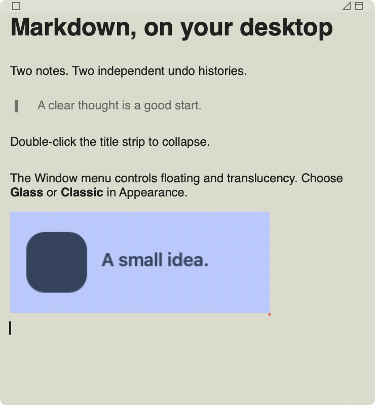
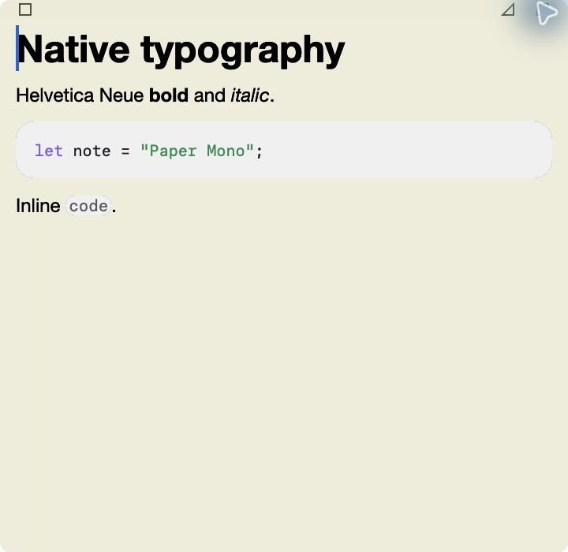
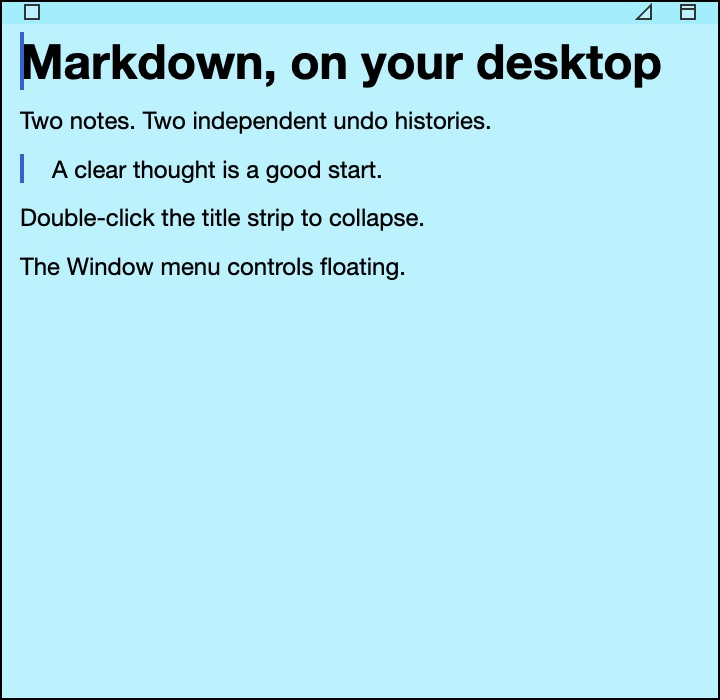
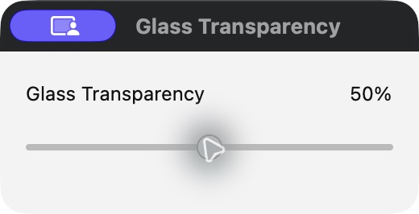

Raw permitted native captures. Swift reference is an earlier capture with different content and tint; these are visual references, not proof of complete pixel parity. Rust uses the same HUD backdrop material and appearance constants.




The control updates all Glass backdrops live. Text retains its own opacity. The separate Translucent command fades the whole note to 75%, matching Swift's distinct behavior.